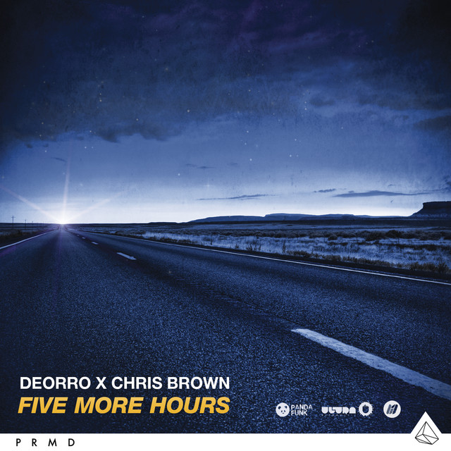
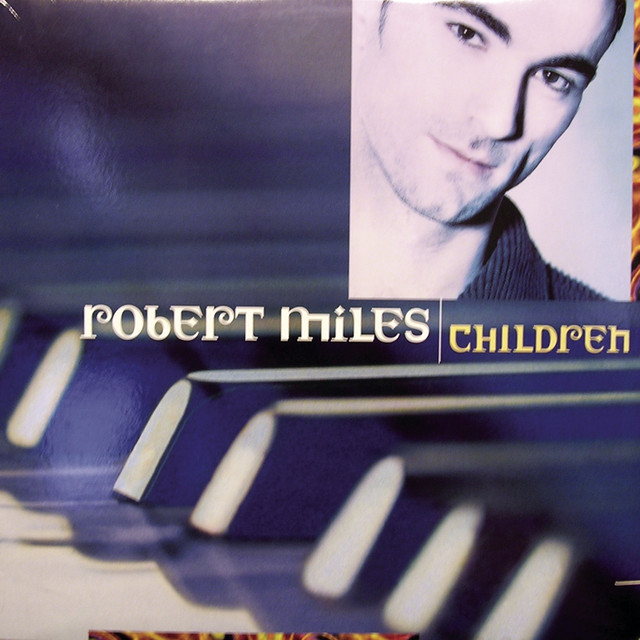

En esta sección encontrarás una lista de mis canciones favoritas, organizadas por género. En este caso de los generos de reggaeton y de pop.
Broken Ties -David and Yowii remix
La cancion de broken ties trata, de que el protagonista echa de menos a algiuien que se ha ido con otra persona. Y aunque este en unaa fiesta, se sigue sintiwendo vavio y tristeza. Aun asi hay esperanza latente la cual es de volver a estar juntos y poder revivir lo pasado.
Five More Hours (Deorrro)
Thank You not so bad (Dimitri Vegas & Like Mike)

Esta cancion es un ejemplo perfecto para poder dar las gracias a alguien especial.
Children (Robert Miles)
Esta canción es una de las mejores que he escuchado en el mundo de la electronica es una que te lleva a a un viaje tansumamente emocional que cuando pega el subidon no sabes si bailar o solo escuchar.